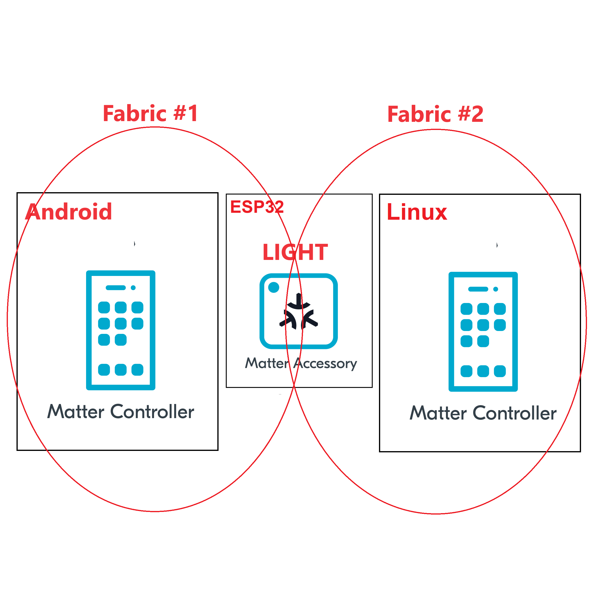

In this codelab we will show you how to use the Multi Admin feature of the Matter protocol.
In this codelab, you will:

In this CodeLab we will run a Matter Latter on a ESP32 microcontroller, the Matter Controller on an Android mobile app and another Matter controller on Linux. This will allow us to create two matter fabrics and we will learn how to use the Multi-admin feature of the Matter protocol.
This set of Codelabs will use Ubuntu 22.04 on a Amd64 based architecture.
You will need
Ubuntu 22.04 with a Bluetooth interfaceThe total codelab will take approximately a Duration of 30 minuates to complete.
You should have built the Matter switch in a previous codelab.
cd esp-idf
source ./export.sh
cd ..
cd esp-matter
source ./export.sh
cd ~/Projects/starter-esp-matter-app/
idf.py -p /dev/ttyUSB0 erase_flash
idf.py -p /dev/ttyUSB0 flash monitor
** replace the path with your device path
In this section we will pair our ESP32 matter switch application on the ESP32 using the chip-tool on Android.
matter onboardingcode qrcodeurl
This will display a link. Click on the link and a QR code should open on the webpage.
In this section we will pair our ESP32 matter light application on the ESP32 using the chip-tool that acts as a matter controller. This will create a second matter fabric and will demonstrate that a Matter light can be simultaneously controlled by multiple admins.
Firstly, you can verify that the Matter light has an open commissoning window by using the following command on a terminal on your linux host
avahi-browse -rt _matterc._udp
./out/host/chip-tool pairing code 1 34970112332
Replace the code above with the code you noted from the Android chip tool.
If everything is working you should see output logs and you should see that the commissioning was successful
[1683309736.149316][15:17] CHIP:CTL: Successfully finished commissioning step 'Cleanup'
[1683309736.149405][15:17] CHIP:TOO: Device commissioning completed with success
In the same shell window, we will read the vendor-name of the Matter accessory using the following command:
./out/host/chip-tool basicinformation read vendor-name 4 0
In the output logs, you should see that the Vendor Name
[1682445848.220725][5128:5130] CHIP:TOO: VendorName: TEST_VENDOR
./chip-tool onoff read on-off 1 0x1
./chip-tool onoff toggle 1 1
./chip-tool operationalcredentials read fabrics 1 0
You should stop the switch-app process by using Ctrl-] in the first esp32 monitor window, the light-app process by using Ctrl-] in the second esp32 monitor window and then run idf erase flash.
It also a great habit to clean up the temporary files after you finish testing by using this command:
rm -fr /tmp/chip_*
Note: removing the /tmp/chip* files can sometimes clear up unexpected behaviours.
Checkout the official documentation [Espressif Matter SDK documentation here: ] (https://docs.espressif.com/projects/esp-matter/en/latest/esp32/)
Also check out the Project CHIP Matter SDK repo Project Chip - ConnectedHomeIp